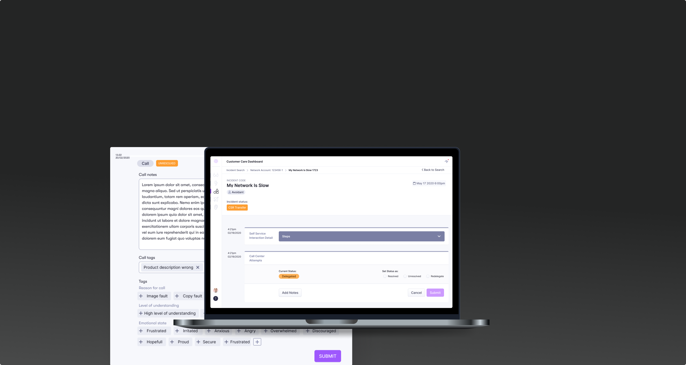
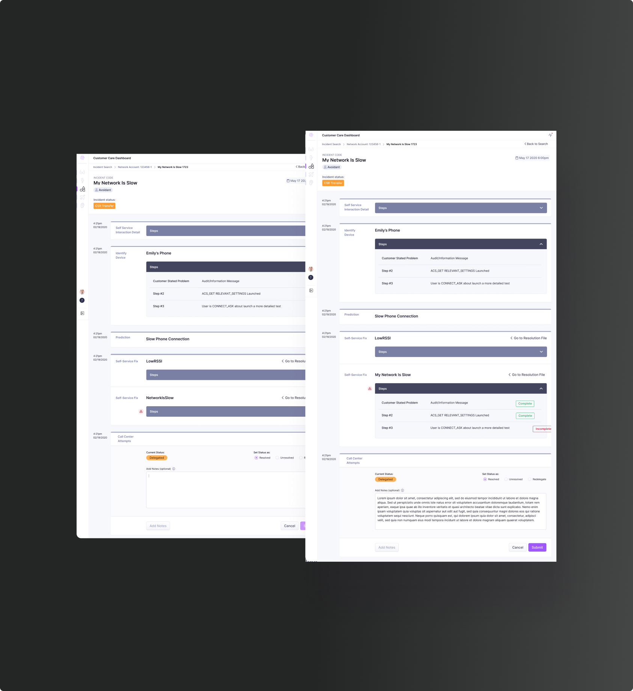
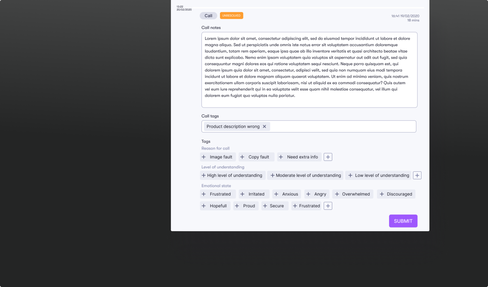

Audience
A customer service representative.
Client
Sweepr
Date
September 20th, 2019


Scroll up
Customer service representatives need a tool to both track the history of a customers self-service use, have a picture of their home context to aid in customer query, and to track and resolve tickets flagged to them. The challenge for this was to make the layout of the tool intuitive, and have a much larger range of options for the CSR to input data when on a call with a customer.
or down
Alias editor
Product design, UX design, UI design, Copywriting, Illustration

The CSR (Customer Service Representative) Dashboard is a tool to allow our clients to track the success of users self-care journeys. The tool required a design update to align it to the new design system, make it easy for CSR’s to document their customer interactions, as well as including new features to make the tool more competitive with similar tools.
The steps taken by the end user are outline in the UI on the Y axis. This allowed for flexibility and scalibility. The ability to add notes during a call was also added to the design.

In an earlier itteration of the design, I came up with a system to add context during a call that required minimal effort by the user, along with a standardlised reporting system. The tags were a quick way to do this. However, scope restrictions for development meant we had to poush them forwward into future versions.
